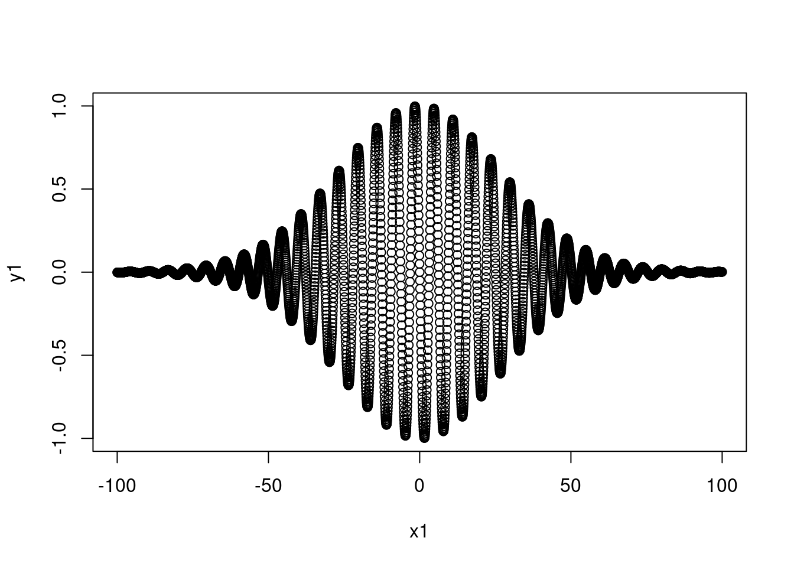

8.5 Arquivos binários
Arquivo texto favorecem a legibilidade humana dos dados mas tem limitada precisão numérica limitada. Formatos binários diminuem substancialmente o tamanho, o tempo de leitura e escrita de arquivos. Por isso, vários softwares armazenam dados no formato binário.
Após a leitura e o processamento de dados brutos você provavelmente os salvará para uso futuro. Este procedimento é recomendado para evitar de ter que repetir todo processamento novamente. Para dados que ocupam espaço significativo (por exemplo com mais de 1 milhão de linhas) é mais eficiente salvar os dados em um formato binário, uma vez que dessa forma os tempos de escrita e leitura dos dados é menor.
8.5.1 Formatos binários nativos do R
8.5.1.1 Rdata
Para mostrar como usar as funções save() e load() vamos utilizar os dados pluviométricos lidos anteriormente (dprec) e selecionar as colunas de interesse. O data frame será salvo em um arquivo binário do R com a extensão .RData.
# primeiras linhas
head(dprec[, 1:10])
#> X..EstacaoCodigo NivelConsistencia Data TipoMedicaoChuvas Maxima
#> 1 3054002 1 01/01/1934 1 NA
#> 2 3054002 1 01/02/1934 1 66.3
#> 3 3054002 1 01/03/1934 1 55.0
#> 4 3054002 1 01/04/1934 1 54.5
#> 5 3054002 1 01/05/1934 1 30.5
#> 6 3054002 1 01/06/1934 1 42.5
#> Total DiaMaxima NumDiasDeChuva MaximaStatus TotalStatus
#> 1 NA NA NA 0 0
#> 2 174.7 6 10 1 1
#> 3 160.7 9 10 1 1
#> 4 98.4 1 4 1 1
#> 5 119.4 29 8 1 1
#> 6 191.6 13 11 1 1
# selecionando somente dados diarios do dia 1 a 31 de cada ano
chuva_df <- dprec[, c(3, 14:44)]
# arquivo binario do R
file_chuva_df <- paste0(tempfile(), ".RData")
save(chuva_df, file = file_chuva_df)
#save(chuva_df, file = "../output-adar/chuva_df.RData")
# verificando se arquivo foi salvo no diretório
file.exists(file_chuva_df)
#> [1] TRUEComo o objeto chuva_df foi salvo em um arquivo, vamos removê-lo e então recuperá-lo carregando os dados armazenado no arquivo chuva_df.RData.
# apagando chuva_df do ambiente de trabalho
rm(chuva_df)
# verifica existência de objeto
exists(chuva_df)
#> Error in exists(chuva_df): object 'chuva_df' not found
# carregando chuva_df
load(file = file_chuva_df)
ls()
#> [1] "arq_temp" "bdmep_url_file" "cab"
#> [4] "chuva_df" "cols_exclud" "dados_limpos"
#> [7] "dprec" "dprec_file" "file_83004_limpo"
#> [10] "file_chuva_df" "hidroweb_dest_file" "hidroweb_url_file"
#> [13] "link_soi" "nome_vars" "pacotes"
#> [16] "pcks" "rblue" "soi"
#> [19] "soi.df" "soi_file" "tab_rio"
# para carregar os dados e saber o nome com que foram salvos
print(load(file = file_chuva_df))
#> [1] "chuva_df"
head(chuva_df[, 1:10])
#> Data Chuva01 Chuva02 Chuva03 Chuva04 Chuva05 Chuva06 Chuva07
#> 1 01/01/1934 NA NA NA NA 10.5 3.0 11.1
#> 2 01/02/1934 15.5 3.5 0.0 0.0 11.9 66.3 1.0
#> 3 01/03/1934 0.0 0.0 0.0 0.0 0.0 0.0 0.0
#> 4 01/04/1934 54.5 0.0 0.0 0.0 0.0 18.5 0.0
#> 5 01/05/1934 0.0 19.0 26.7 0.0 3.2 4.2 0.0
#> 6 01/06/1934 0.0 0.0 21.5 12.7 8.7 0.0 0.0
#> Chuva08 Chuva09
#> 1 0.0 0
#> 2 40.0 0
#> 3 0.0 55
#> 4 19.5 0
#> 5 0.0 0
#> 6 0.0 0Um vantagem desse formato é que os objetos criados podem ser lidos pelo R independente do sistema operacional e da arquitetura do computador, tornando muito prático o acesso aos dados. Cada vez que uma sessão do R é finalizada, uma janela surge perguntando se deseja salvar o espaço de trabalho (save the workspace image), que nada mais é do que um arquivo binário chamado .RData no diretório de trabalho. Assim quando iniciar a sessão se o arquivo .RData estiver no diretório de trabalho ele será automaticamente carregado tornando todos os objetos da última sessão disponíveis novamente. Se você deseja salvar o espaço de trabalho em outro momento use a função save.image().
Quando desejamos salvar só uma parte dos dados uma opção é usar a função rm() (uma abreviação de remove) para remover objetos que não são de interesse antes de finalizar a sessão do R. A função save()permite salvar mais de um objeto em um mesmo arquivo.
file_dados_prec <- paste0(tempfile(), ".Rdata")
save(cab, chuva_df, file = file_dados_prec)
#save(cab, chuva_df, file = "../output-adar/dados_prec.RData")
ls()
#> [1] "arq_temp" "bdmep_url_file" "cab"
#> [4] "chuva_df" "cols_exclud" "dados_limpos"
#> [7] "dprec" "dprec_file" "file_83004_limpo"
#> [10] "file_chuva_df" "file_dados_prec" "hidroweb_dest_file"
#> [13] "hidroweb_url_file" "link_soi" "nome_vars"
#> [16] "pacotes" "pcks" "rblue"
#> [19] "soi" "soi.df" "soi_file"
#> [22] "tab_rio"
rm(cab, chuva_df)
ls()
#> [1] "arq_temp" "bdmep_url_file" "cols_exclud"
#> [4] "dados_limpos" "dprec" "dprec_file"
#> [7] "file_83004_limpo" "file_chuva_df" "file_dados_prec"
#> [10] "hidroweb_dest_file" "hidroweb_url_file" "link_soi"
#> [13] "nome_vars" "pacotes" "pcks"
#> [16] "rblue" "soi" "soi.df"
#> [19] "soi_file" "tab_rio"
# carrega e imprime na tela nome dos dados carregados
print(load(file_dados_prec))
#> [1] "cab" "chuva_df"
ls()
#> [1] "arq_temp" "bdmep_url_file" "cab"
#> [4] "chuva_df" "cols_exclud" "dados_limpos"
#> [7] "dprec" "dprec_file" "file_83004_limpo"
#> [10] "file_chuva_df" "file_dados_prec" "hidroweb_dest_file"
#> [13] "hidroweb_url_file" "link_soi" "nome_vars"
#> [16] "pacotes" "pcks" "rblue"
#> [19] "soi" "soi.df" "soi_file"
#> [22] "tab_rio"8.5.1.2 RDS
As funções readRDS() e writeRDS() são similares a load() e save(), respectivamente, exceto que elas lidam com um único objeto. Em contrapartida elas possuem a flexibilidade nomear o objeto lido com um nome diferente do qual ele foi salvo. Vamos alterar o formato da data do dataframe chuva_df e salvá-lo no arquivo chuva_df.rds.
# salvar dados em um arquivo rds
head(chuva_df[, 1:10])
#> Data Chuva01 Chuva02 Chuva03 Chuva04 Chuva05 Chuva06 Chuva07
#> 1 01/01/1934 NA NA NA NA 10.5 3.0 11.1
#> 2 01/02/1934 15.5 3.5 0.0 0.0 11.9 66.3 1.0
#> 3 01/03/1934 0.0 0.0 0.0 0.0 0.0 0.0 0.0
#> 4 01/04/1934 54.5 0.0 0.0 0.0 0.0 18.5 0.0
#> 5 01/05/1934 0.0 19.0 26.7 0.0 3.2 4.2 0.0
#> 6 01/06/1934 0.0 0.0 21.5 12.7 8.7 0.0 0.0
#> Chuva08 Chuva09
#> 1 0.0 0
#> 2 40.0 0
#> 3 0.0 55
#> 4 19.5 0
#> 5 0.0 0
#> 6 0.0 0
# alterando formato de datas da coluna Data
chuva_df$Data <- as.Date(x = chuva_df$Data, format = "%d/%m/%Y")
file_rds_chuva_df <- paste0(tempfile(), ".RDS")
saveRDS(object = chuva_df, file = file_rds_chuva_df)
file.exists(file_rds_chuva_df)
#> [1] TRUEApós salvar o dataframe chuva_df vamos removê-lo do ambiente da sessão e recuperá-lo com a função readRDS().
# removendo chuva_df do ambiente
rm(chuva_df)
# recuperando dados do arquivo em uma variável com nome diferente do original
prec_ana <- readRDS(file_rds_chuva_df)
head(prec_ana[, 1:10])
#> Data Chuva01 Chuva02 Chuva03 Chuva04 Chuva05 Chuva06 Chuva07
#> 1 1934-01-01 NA NA NA NA 10.5 3.0 11.1
#> 2 1934-02-01 15.5 3.5 0.0 0.0 11.9 66.3 1.0
#> 3 1934-03-01 0.0 0.0 0.0 0.0 0.0 0.0 0.0
#> 4 1934-04-01 54.5 0.0 0.0 0.0 0.0 18.5 0.0
#> 5 1934-05-01 0.0 19.0 26.7 0.0 3.2 4.2 0.0
#> 6 1934-06-01 0.0 0.0 21.5 12.7 8.7 0.0 0.0
#> Chuva08 Chuva09
#> 1 0.0 0
#> 2 40.0 0
#> 3 0.0 55
#> 4 19.5 0
#> 5 0.0 0
#> 6 0.0 08.5.2 NetCDF (Network Common Data Form)
NetCDF é um formato binário, auto-descritivo e independente do SO criado para criar e distribuir arranjos multidimensionais de dados gradeados. Originalmente foi desenvolvido para o armazenamento e distribuição de dados climáticos, tais como os gerados por modelos climáticos e sistemas de assimilação de dados como as reanálises.
As bibliotecas NetCDF são mantidas pelo Unidata. Dados no formato NetCDF são acessíveis no R pelos pacotes ncdf4 (Pierce 2017) e raster (Hijmans 2017). Esses pacotes fornecem o suporte necessário para leitura e escrita de arquivos NetCDF.
O pacote ncdf foi um dos primeiros pacotes de interface com dados NetCDF, mas com suporte somente para versão 3. O pacote que o substituiu foi o ncdf4 e suporta tanto arquivos no formato NetCDF 3 como 4. O pacote raster baseia-se no ncdf4 para fornecer através da função brick() uma importação e exportação fácil de dados NetCDF com o R.
8.5.2.1 Pré-requisitos
Para utilizar o pacote ncdf4 é necessário instalar os pacotes linux mostrados abaixo.
## Install pacotes NetCDF
$ sudo apt-get install libnetcdf-dev libudunits2-devPacotes necessários:
library(ncdf4)library(raster)
library(RColorBrewer)
library(fields)8.5.2.2 Arquivo exemplo
Os exemplos a seguir usam o pacote ncdf4 para ler arquivo NetCDF com dados climáticos do Climate Research Unit CRU, consistindo de valores médios de longo prazo (1961-1990) da temperatura do ar próximo à superfície com resolução espacial de 0,5 º na área continental. As dimensões da array são: 720 (longitudes) x 360 (latitudes) x 12 (meses).
dados_cru_url <- "https://www.dropbox.com/s/ynp9i42is1flg43/cru10min30_tmp.nc?dl=1"
dest_file_nc <- file.path(tempdir(), "cru10min30_tmp.nc")
download.file(dados_cru_url, dest_file_nc)Abrindo arquivo NetCDF e obtendo informações básicas.
dest_file_nc
#> [1] "/tmp/RtmpcOhBAB/cru10min30_tmp.nc"
file.exists(dest_file_nc)
#> [1] TRUE# variável de interesse, tmp: temperatura do ar
dname <- "tmp"
# abre o arquivo NetCDF
ncin <- nc_open(dest_file_nc)
print(ncin)
#> File /tmp/RtmpcOhBAB/cru10min30_tmp.nc (NC_FORMAT_CLASSIC):
#>
#> 2 variables (excluding dimension variables):
#> float climatology_bounds[nv,time]
#> float tmp[lon,lat,time]
#> long_name: air_temperature
#> units: degC
#> _FillValue: -99
#> source: E:\Projects\cru\data\cru_cl_2.0\nc_files\cru10min_tmp.nc
#>
#> 4 dimensions:
#> lon Size:720
#> standard_name: longitude
#> long_name: longitude
#> units: degrees_east
#> axis: X
#> lat Size:360
#> standard_name: latitude
#> long_name: latitude
#> units: degrees_north
#> axis: Y
#> time Size:12
#> standard_name: time
#> long_name: time
#> units: days since 1900-01-01 00:00:00.0 -0:00
#> axis: T
#> calendar: standard
#> climatology: climatology_bounds
#> nv Size:2
#>
#> 7 global attributes:
#> data: CRU CL 2.0 1961-1990 Monthly Averages
#> title: CRU CL 2.0 -- 10min grid sampled every 0.5 degree
#> institution: http://www.cru.uea.ac.uk/
#> source: http://www.cru.uea.ac.uk/~markn/cru05/cru05_intro.html
#> references: New et al. (2002) Climate Res 21:1-25
#> history: P.J. Bartlein, 19 Jun 2005
#> Conventions: CF-1.0
# estrutura dos dados
#str(ncin)
# classe
class(ncin)
#> [1] "ncdf4"
# modo
mode(ncin)
#> [1] "list"Agora, vamos ler as coordenadas de longitude e latitude.
lon <- ncvar_get(ncin, "lon")
nlon <- dim(lon)
head(lon)
#> [1] -179.75 -179.25 -178.75 -178.25 -177.75 -177.25
lat <- ncvar_get(ncin, "lat", verbose = FALSE)
nlat <- dim(lat)
head(lat)
#> [1] -89.75 -89.25 -88.75 -88.25 -87.75 -87.25
c(nlon, nlat)
#> [1] 720 360Vamos obter a variável temporal e seus atributos usando as funções ncvarget() e ncatt_get. Depois fechamos o acesso ao arquivo NetCDF.
tempo <- ncvar_get(ncin, "time")
(tunits <- ncatt_get(ncin, "time", "units"))
#> $hasatt
#> [1] TRUE
#>
#> $value
#> [1] "days since 1900-01-01 00:00:00.0 -0:00"
(nt <- dim(tempo))
#> [1] 12
tmp.array <- ncvar_get(ncin, dname)
# resumo da estrutura dos dados
str(tmp.array)
#> num [1:720, 1:360, 1:12] NA NA NA NA NA NA NA NA NA NA ...
# nome longo da variável
(dlname <- ncatt_get(ncin, dname, "long_name"))
#> $hasatt
#> [1] TRUE
#>
#> $value
#> [1] "air_temperature"
# unidades da variável
(dunits <- ncatt_get(ncin, dname, "units"))
#> $hasatt
#> [1] TRUE
#>
#> $value
#> [1] "degC"
# valor definido para valores faltantes
(fillvalue <- ncatt_get(ncin, dname, "_FillValue"))
#> $hasatt
#> [1] TRUE
#>
#> $value
#> [1] -99
# fechando arquivo
nc_close(ncin)As variáveis do arquivo NetCDF são lidas e escritas como vetores (p.ex.: longitudes), arrays bidimensionais (matrizes, campo espacial de um momento), ou arrays multidimensionais (campos espaciais de uma variável em diversos tempos).
Vamos extrair o campo espacial de um passo de tempo (1 dia), criar um data frame onde cada linha será um ponto de grade e a coluna representa uma variável, por exemplo: longitude, latitude e temperatura.
m <- 1
# campo espacial do primeiro dia de dados
tmp.slice <- tmp.array[, , m]
str(tmp.slice)
#> num [1:720, 1:360] NA NA NA NA NA NA NA NA NA NA ...
# outra função para visualizar dados com 3D
image.plot(lon, lat, tmp.slice, col = rev(brewer.pal(10, "RdBu")))
8.5.2.2.1 Forma fácil de importar NetCDF
O pacote raster fornece uma função para fácil importação de arquivos NetCDF. Os dados importados são retornados no formato específico do pacote (classe de dados RasterBrick). Esta classe de dados, corresponde a uma estrutura de dados espaciais gradeados, regularmente espaçados, podendo ter uma ou mais dimensões.
Quando o dados gradeados possuem somente uma variável em um único tempo, como por exemplo a altitude do terreno (z), temos 2 dimensões espaciais x (longitude), y (latitude) e z. Neste caso, o dado é um raster e sua classe de dados é denominada RasterLayer no pacote raster, ou seja os dados possuem somente uma camada. Quando os dados possuem mais de uma camada, como no casos de campos espaciais de temperatura em diferentes meses (cada mês é uma camada) a classe de dados é denominada Rasterbrick.
Para importar dados em formato NetCDF que tenham mais uma camada no R, usamos a função brick() do pacote raster.
brick_tar_cru <- brick(dest_file_nc)
brick_tar_cru
#> class : RasterBrick
#> dimensions : 360, 720, 259200, 12 (nrow, ncol, ncell, nlayers)
#> resolution : 0.5, 0.5 (x, y)
#> extent : -180, 180, -90, 90 (xmin, xmax, ymin, ymax)
#> coord. ref. : +proj=longlat +datum=WGS84 +ellps=WGS84 +towgs84=0,0,0
#> data source : /tmp/RtmpcOhBAB/cru10min30_tmp.nc
#> names : X1976.01.16, X1976.02.15, X1976.03.16, X1976.04.16, X1976.05.16, X1976.06.16, X1976.07.16, X1976.08.16, X1976.09.16, X1976.10.16, X1976.11.16, X1976.12.16
#> Date : 1976-01-16, 1976-02-15, 1976-03-16, 1976-04-16, 1976-05-16, 1976-06-16, 1976-07-16, 1976-08-16, 1976-09-16, 1976-10-16, 1976-11-16, 1976-12-16
#> varname : tmpO resultado da importação de um RasterBrick mostra no console do R informações sobre as dimensões dos dados, a resolução espacial, os limites do domínio espacial, o sistema de coordenadas de referência, o arquivo fonte dos dados, o nome das camadas, eventualmente as datas e nome da variável importada do arquivo NetCDF.
Quando o arquivo NetCDF possui mais de uma variável é necessário definir o nome da variável de interesse através do argumento varname. No exemplo acima poderíamos ter chamado a função raster::brick() com brick(dest_file_nc, varname = "tmp"). Mas como há somente uma variável no arquivo NetCDF deste exemplo a especificação deste argumento é opcional.
Os nomes das camadas, são acessados e alterados com função names(), da mesma forma que em data frames.
# substituindo a letra "X" dos nomes por "Mes_"
names(brick_tar_cru) <- gsub("X", "Mes_", names(brick_tar_cru))
names(brick_tar_cru)
#> [1] "Mes_1976.01.16" "Mes_1976.02.15" "Mes_1976.03.16" "Mes_1976.04.16"
#> [5] "Mes_1976.05.16" "Mes_1976.06.16" "Mes_1976.07.16" "Mes_1976.08.16"
#> [9] "Mes_1976.09.16" "Mes_1976.10.16" "Mes_1976.11.16" "Mes_1976.12.16"Um gráfico pode ser gerado através da funções plot(). Por default são mostrados no máximo 16 camadas de um RasteBrick.
plot(brick_tar_cru, col = rev(brewer.pal(10, "RdBu")))Os dados em formato RasterBrick, RasterStack ou RasterLayer podem ser convertidos para data frame por meio da função raster::as.data.frame().
df_tar_cru <- as.data.frame(
x = brick_tar_cru,
xy = TRUE,
na.rm = TRUE
#long = TRUE
)
str(df_tar_cru)
#> 'data.frame': 62961 obs. of 14 variables:
#> $ x : num -74.8 -74.2 -73.8 -73.2 -43.8 ...
#> $ y : num 83.2 83.2 83.2 83.2 83.2 ...
#> $ Mes_1976.01.16: num -35.8 -35.4 -35.1 -34.6 -31.8 ...
#> $ Mes_1976.02.15: num -37.9 -37.5 -37.1 -36.6 -33.3 ...
#> $ Mes_1976.03.16: num -36.7 -36.3 -35.9 -35.5 -33.6 ...
#> $ Mes_1976.04.16: num -28.1 -27.7 -27.4 -27.1 -24.3 ...
#> $ Mes_1976.05.16: num -12.8 -12.7 -12.5 -12.3 -11.3 ...
#> $ Mes_1976.06.16: num -0.9 -0.9 -0.9 -0.9 -2.3 ...
#> $ Mes_1976.07.16: num 3.3 3.3 3.3 3.2 1.2 ...
#> $ Mes_1976.08.16: num 1.4 1.4 1.4 1.4 -1.1 ...
#> $ Mes_1976.09.16: num -7.9 -7.8 -7.7 -7.6 -12.9 ...
#> $ Mes_1976.10.16: num -20.2 -19.9 -19.7 -19.4 -23.7 ...
#> $ Mes_1976.11.16: num -29.7 -29.3 -28.9 -28.5 -28.1 ...
#> $ Mes_1976.12.16: num -33.6 -33.3 -32.9 -32.5 -31 ...
head(df_tar_cru)
#> x y Mes_1976.01.16 Mes_1976.02.15 Mes_1976.03.16
#> 9571 -74.75 83.25 -35.8 -37.9 -36.7
#> 9572 -74.25 83.25 -35.4 -37.5 -36.3
#> 9573 -73.75 83.25 -35.1 -37.1 -35.9
#> 9574 -73.25 83.25 -34.6 -36.6 -35.5
#> 9633 -43.75 83.25 -31.8 -33.3 -33.6
#> 9634 -43.25 83.25 -32.1 -33.6 -33.8
#> Mes_1976.04.16 Mes_1976.05.16 Mes_1976.06.16 Mes_1976.07.16
#> 9571 -28.1 -12.8 -0.9 3.3
#> 9572 -27.7 -12.7 -0.9 3.3
#> 9573 -27.4 -12.5 -0.9 3.3
#> 9574 -27.1 -12.3 -0.9 3.2
#> 9633 -24.3 -11.3 -2.3 1.2
#> 9634 -24.6 -11.5 -2.5 0.9
#> Mes_1976.08.16 Mes_1976.09.16 Mes_1976.10.16 Mes_1976.11.16
#> 9571 1.4 -7.9 -20.2 -29.7
#> 9572 1.4 -7.8 -19.9 -29.3
#> 9573 1.4 -7.7 -19.7 -28.9
#> 9574 1.4 -7.6 -19.4 -28.5
#> 9633 -1.1 -12.9 -23.7 -28.1
#> 9634 -1.3 -13.2 -24.2 -28.5
#> Mes_1976.12.16
#> 9571 -33.6
#> 9572 -33.3
#> 9573 -32.9
#> 9574 -32.5
#> 9633 -31.0
#> 9634 -31.4Os argumentos usados na função as.dataframe() correspondem a:
xé o objetoRaster*(onde * significaRasterBrick,RasterStackouRasterLayer)xyé um argumento lógico, seTRUE(verdadeiro) inclui as coordenadas espaciais (longitude e altitude) das células do raster como colunas no data frame de saídana.rmé um argumento opcional lógico, tal que se forTRUEremove linhas com valoresNA. Isto é particularmente útil para grandes conjuntos de dados com muitos valoresNAs e em regiões oceânicas, como no arquivo de exemplo, onde não há dados medidos. Note que sena.rm = FALSE(TRUE) o data frame resultante terá (poderá ter) um número de linhas igual ao (menor que o) número de células doRasterBrick.
nrow(df_tar_cru) < ncell(brick_tar_cru)
#> [1] TRUElongé um argumento opcional lógico. Se forTRUE(verdadeiro) os valores são reestruturados de um formato amplo para um formato longo (veja a seção 9.3.2.1 para definição de dados no formato longo e amplo).
Como exercício, rode novamente o trecho de código anterior, mudando os valores dos argumentos lógicos e observe as mudanças nas dimensões do data frame resultante.
References
Pierce, David. 2017. Ncdf4: Interface to Unidata netCDF (Version 4 or Earlier) Format Data Files. https://CRAN.R-project.org/package=ncdf4.
Hijmans, Robert J. 2017. Raster: Geographic Data Analysis and Modeling. https://CRAN.R-project.org/package=raster.